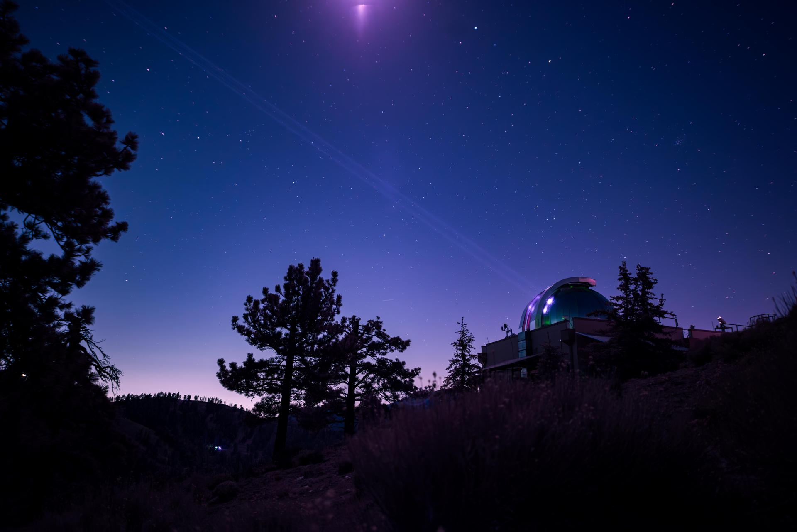

Sentyment społeczny i moratoria na centra danych
Notatka raportu "Orbitalne centra danych". Kluczowe źródła: źródło 1, źródło 2.
W skrócie
Naziemne centra danych (DC - obiekty pełne serwerów do obliczeń AI i chmury) napotykają coraz twardszy opór społeczny i regulacyjny: w USA opozycja lokalna zablokowała lub opóźniła projekty warte 64 mld USD 🟠 Data Center Watch, 14 stanów rozważa moratoria (czasowe wstrzymanie budowy) 🟠 Rockefeller Institute, a sondaż Gallup z marca 2026 pokazał, że 71% Amerykanów nie chce takiego obiektu w sąsiedztwie 🟠 the-decoder. Dla inwestora ważne są dwie sprzeczne siły: opór lokalnie podnosi koszty i ryzyko opóźnień (kto traci - hyperscalerzy i deweloperzy DC; kto zyskuje - operatorzy alternatyw, w tym narracja "kosmosu"), ale globalny popyt na energię rośnie tak szybko (485 -> 950 TWh do 2030) 🔵 IEA, że sektor nie zwalnia. Kluczowy haczyk dla wątku orbitalnego: ucieczka na orbitę nie likwiduje oporu - tworzy nowy front, bo astronomowie (IAU, AAS, ESO, RAS) ostro protestują przeciw planom milionów jasnych satelitów. Tempo zmian jest szybkie: legislacja stanowa, wnioski do FCC i preprint Marcy'ego z 2026 r. pojawiły się w ciągu kilkunastu miesięcy.
Powiązane wątki
Mapa powiązań tematycznych - jak ten wątek łączy się z resztą raportu.
- Naziemny bottleneck - moratoria i protesty to część naziemnego bottlenecku
- Regulacje i debris - light pollution łączy sentyment z regulacją astronomiczną
- Środowisko - presja ESG i argumenty środowiskowe napędzają sentyment
- Gracze i projekty - narracja "data centers in space" jako PR graczy
Moratoria i ograniczenia naziemne
Opór wobec naziemnych DC przeszedł w 2026 r. z fazy protestów do fazy prawa. Według Rockefeller Institute na czerwiec 2026 r. 14 stanów USA rozważa lub rozważało moratorium na centra danych 🟠 Rockefeller Institute. W pierwszych sześciu tygodniach 2026 r. w ponad 30 stanach złożono ponad 300 projektów ustaw dotyczących DC - to przesunięcie od zachęt podatkowych ku nadzorowi regulacyjnemu 🟠 MultiState.
Uwaga terminologiczna: "MW" (megawat) to miara mocy elektrycznej obiektu - większość ustaw ustawia próg w MW, powyżej którego DC podlega zakazowi. Najostrzejsze przykłady: Georgia (HB 1059) blokuje zezwolenia do grudnia 2028 r. 🟠, Oklahoma (SB 1488) wstrzymuje DC >=100 MW do 1 listopada 2029 r. 🟠, Vermont (S 205) zakazuje "AI data centers" >=100 MW do 2030 r. 🟠, a Virginia (HB 1515) blokuje obiekty >=1 MW do lipca 2028 r. lub do opróżnienia kolejki przyłączeniowej 🟠 Rockefeller Institute. Część prób utknęła: Maine (LD 307, moratorium na DC >20 MW do listopada 2027 r.) zostało zawetowane przez gubernatora, a New York (AB 10141/SB 9144, roczne moratorium na DC >=20 MW) przeszło legislaturę, ale czeka na decyzję gubernator Hochul 🟠 Rockefeller Institute. Implikacja dla inwestora: ryzyko legislacyjne jest realne, ale rozdrobnione i często niedokończone - to raczej podnoszenie kosztu i czasu projektu niż twardy zakaz.
W Europie ograniczenia są starsze i twardsze. Amsterdam zdecydował, że nie wyda zgody na żadne nowe DC ani ich rozbudowę w gminie, a do sprawy wróci dopiero w 2030 r. 🟠 NL Times. W Irlandii operator sieci EirGrid już w 2022 r. nałożył moratorium na nowe DC w Dublinie do 2028 r. 🟠 PublicPolicy.ie - kontekst jest dramatyczny: w 2023 r. centra danych zużyły 21% całej zmierzonej energii elektrycznej w Irlandii, o 20% więcej rok do roku 🟠 PublicPolicy.ie. Wcześniejszym precedensem był Singapur, który wprowadził prawie trzyletnią przerwę w zezwoleniach (2019-2022) 🔴 MindStudio. Implikacja: dojrzałe rynki potrafią twardo zatrzymać podaż mocy, co bezpośrednio wspiera narrację "wynieśmy obliczenia gdzie indziej".
Sondaż Gallup III.2026 i inne badania opinii
Najmocniejszym sygnałem nastrojów jest sondaż Gallup z marca 2026 r.: siedmiu na dziesięciu Amerykanów (70%) sprzeciwia się budowie centrum danych AI w swojej okolicy, w tym 48% "mocno" 🔵 Gallup. Relacja branżowa podaje 71% sprzeciwu (48% mocno) i dorzuca uderzające porównanie - tylko 53% Amerykanów sprzeciwia się elektrowni jądrowej w sąsiedztwie, czyli ludzie wolą sąsiada-reaktor niż sąsiada-DC 🟠 the-decoder. Opór ma wymiar polityczny i geograficzny: 56% Demokratów "mocno się sprzeciwia" wobec 39% Republikanów, a regionalnie najsilniejszy jest na Środkowym Zachodzie (76%) i Południu (75%) 🟠 the-decoder.
pie title Gallup III.2026 - DC AI w okolicy
"Przeciw" : 70
"Nie przeciw" : 30
Rys. 69 - Stosunek Amerykanów do budowy centrum danych AI w sąsiedztwie (sondaż Gallup, III.2026). Dane: Gallup.
Obraz nie jest jednak jednoznacznie wrogi. Sondaż Data for Progress z sierpnia 2025 r. (próba ważona N=1179) pokazał, że tylko 36% respondentów sprzeciwia się nowym DC w swoim stanie, a 51% je popiera 🔵 Data for Progress. Rozbieżność wynika z framingu pytania ("w moim stanie" vs "w mojej okolicy"). Implikacja dla inwestora: efekt NIMBY ("Not In My Backyard" - akceptuję ideę, byle nie u mnie) jest realny i to on, a nie ogólna niechęć do AI, napędza blokady lokalne.
pie title Data for Progress VIII.2025 - DC w moim stanie
"Za" : 51
"Przeciw" : 36
"Brak zdania" : 13
Rys. 70 - Stosunek do nowych centrów danych w swoim stanie (Data for Progress, VIII.2025, N=1179; "brak zdania" jako dopełnienie do 100%). Dane: Data for Progress.
Opór lokalny: woda, energia, hałas, protesty, presja ESG
Skala blokad jest mierzalna. Data Center Watch szacuje 64 mld USD projektów w USA zablokowanych lub opóźnionych przez rosnącą, ponadpartyjną opozycję 🟠 Data Center Watch; zidentyfikowano co najmniej 142 grupy aktywistów w 24 stanach oraz ponad 23 petycje z ponad 31 000 podpisów od 2022 r. 🟠 Data Center Watch. Heatmap Pro naliczył 25 anulowanych projektów w 2025 r. - czterokrotnie więcej niż w 2024 r. - z czego 21 padło w drugiej połowie roku 🟠 Heatmap. Konkretne kwoty: projekt Tract w Arizonie o wartości 14 mld USD wycofano po naciskach mieszkańców, a PW Digital Gateway (QTS/Compass) za 24,7 mld USD utknął w co najmniej trzech procesach sądowych 🟠 Data Center Watch. Frekwencja na spotkaniach mówi sama za siebie: ponad 500 osób na radzie Warrenton w Wirginii (ok. 130 zabrało głos, w tym aktor Robert Duvall) i ponad 350 mieszkańców przeciw projektowi Ranalli Lysander (300 MW) w stanie Nowy Jork 🟠 Data Center Watch 🟠 Rockefeller Institute.
xychart-beta
title "Zablokowane/opoznione DC USA (mld USD)"
x-axis ["Lacznie (US)", "PW Digital Gateway", "Tract Arizona"]
y-axis "mld USD" 0 --> 70
bar [64, 24.7, 14]
Rys. 71 - Wartość zablokowanych lub opóźnionych projektów DC w USA: suma oraz dwa największe pojedyncze przypadki. Dane: Data Center Watch.
Trzy fizyczne osie konfliktu to woda, energia i hałas. Średniej wielkości DC może zużyć do ok. 110 mln galonów wody rocznie na chłodzenie - tyle, ile rocznie ok. 1000 gospodarstw domowych 🟠 Public Power. Po stronie energii: globalne zużycie energii elektrycznej przez DC wzrosło o 17% w 2025 r., a w samych obiektach AI aż o 50% 🔵 IEA. IEA prognozuje podwojenie z 485 TWh (2025) do 950 TWh (2030), co da ok. 3% globalnego zapotrzebowania na prąd 🔵 IEA. Obrazowo: jedna zaawansowana szafa serwerowa AI do 2027 r. będzie mieć szczytowe zapotrzebowanie mocy jak 65 gospodarstw domowych 🔵 IEA. Nakłady pięciu największych firm technologicznych przekroczyły 400 mld USD w 2025 r. i mają wzrosnąć o kolejne 75% w 2026 r. 🔵 IEA. Implikacja: to właśnie ta skala zużycia wody i energii daje paliwo protestom - i jednocześnie czyni "darmowe słońce na orbicie i brak wody do chłodzenia" atrakcyjną opowieścią.
Presja ESG (kryteria środowiskowe, społeczne i ładu korporacyjnego) zaostrza problem PR-owo. Microsoft deklaruje cel carbon-negative, water-positive i zero-waste do 2030 r. 🟠 Urban Land, Amazon - 100% energii odnawialnej do 2025 r. i net-zero do 2040 r. 🟠 Urban Land, a Google - całodobowo bezemisyjną energię i uzupełnianie 120% zużytej wody do 2030 r. 🔴 GartSolutions. Te deklaracje zderzają się z danymi: w 2023 r. 42% wody Microsoftu pochodziło z obszarów "water stress", a w 2024 r. 15% poboru świeżej wody Google'a z regionów "high water scarcity" 🔵 arXiv 2512.03077. Implikacja dla inwestora: rozjazd między celami a faktami to dokładnie ten obszar, w którym pojawia się ryzyko zarzutu greenwashingu - i w którym narracja kosmiczna może być wykorzystana jako tarcza wizerunkowa.
Narracja "data centers in space": PR/greenwashing czy realny pivot
Argument za realnym pivotem jest poparty oficjalnymi projektami. Europejski projekt ASCEND (Thales Alenia Space / ESA) celuje w 1 GW mocy obliczeniowej w kosmosie do 2050 r. i podkreśla zerowe zużycie wody do chłodzenia w próżni 🔵 ASCEND. Google w preprincie Project Suncatcher proponuje "kosmiczne centra danych ML" z układami TPU, wskazując, że panele na pewnych orbitach dostają do 8x więcej energii słonecznej rocznie niż panel na Ziemi w średnich szerokościach 🔵 arXiv 2511.19468; próg opłacalności to spadek kosztu wynoszenia na niską orbitę (LEO) do 200 USD/kg 🔵 arXiv 2511.19468. Skala wniosków do amerykańskiego regulatora FCC jest ogromna: SpaceX złożył wniosek o do 1 mln satelitów "orbital data-center" z deklarowanymi 100 GW mocy AI rocznie 🔵 FCC DA-26-113A1, Blue Origin o 51 600 satelitów ("Project Sunrise") 🔵 FCC DOC-420864A1, a startup Starcloud (dawniej Lumen Orbit) o do 88 000 satelitów 🔵 FCC DOC-419509A1. Starcloud zebrał łącznie 21 mln USD finansowania seed 🔴 everywhere.vc, ma MOU (listy intencyjne) na ponad 30 mln USD 🟠 DCD i planuje kompleks 5 GW z panelami ok. 4 km na 4 km 🟠 IDC Nova.
Argument za greenwashingiem/PR jest równie konkretny. Brak peer-reviewed audytu cyklu życia (LCA) dla komercyjnego orbitalnego DC - to jest NIE UJAWNIONE, istnieją tylko studia wykonalności i koncepcje. Sam ASCEND zastrzega, że korzyść klimatyczna wymaga wynoszenia rakietą o 10x mniejszej emisyjności niż dzisiejsze - warunek, który analiza Carbone 4 określa jako wymagający "prawdziwego wyczynu" europejskiego sektora kosmicznego 🔵 ASCEND. Cytowane przez CEO Starcloud porównanie "zamiast 140 mln USD za prąd zapłać 10 mln USD za start i panele" pochodzi ze słabego źródła i nie jest niezależnie zweryfikowane 🔴 Manifold. Implikacja dla inwestora: deklaracje mocy (1 GW, 100 GW) i liczby satelitów są realnymi sygnałami popytu/intencji, ale przepaść między koncepcją a działającym, opłacalnym i klimatycznie korzystnym obiektem jest na ten moment niezamknięta dowodami.
Astronomowie i "Not In My Sky": zanieczyszczenie świetlne
Najpoważniejszym dotąd frontem oporu wobec kosmosu jest astronomia. Już dla planowanych ponad 100 000 satelitów LEO raport AAS SATCON1 stwierdza, że "żadna kombinacja środków łagodzących nie wyeliminuje w pełni wpływu" śladów satelitów na naziemną astronomię optyczną 🔵 AAS SATCON1. ESO przeanalizowało 18 konstelacji o łącznie ponad 26 000 satelitów i oszacowało, że 30-50% ekspozycji obserwatorium Vera C. Rubin o zmierzchu i świcie byłoby "severely affected", a do 3% długich ekspozycji VLT/ELT - zniszczonych 🔵 ESO. Magnituda (mag) to logarytmiczna skala jasności, gdzie niższa wartość oznacza obiekt jaśniejszy; granicą widoczności gołym okiem jest ok. 6-7 mag. Stąd próg: AAS, ESO i IAU CPS rekomendują jasność <=7 mag 🔵 AAS SATCON1 🔵 IAU CPS techdoc102.
Rys. 72 - Astronomia: Surface of TRAPPIST-1f. Źródło: NASA, licencja: public domain.
#grafika #sentyment-spoleczny-i-moratoria-na-centra-danych #astronomia #slady-satelitow
Próg 7 mag wszedł już do prawa: francuska ustawa kosmiczna (FSOA) wymaga, by każdy satelita megakonstelacji projektowano z celem jasności >=7 mag, a proponowany unijny EU Space Act wprowadza próg <7 mag z podejściem skalowanym do wielkości floty 🔵 UNOOSA CRP22. Przekroczenie tego progu daje prawie dziesięciokrotną utratę danych z powodu artefaktów kalibracji 🔵 UNOOSA CRP22. SpaceX próbował łagodzić problem: testy ponad 300 satelitów na ok. 350 km zamiast 550 km dały ok. 60% redukcji obrazów Rubin z oświetlonym satelitą 🟠 PCMag, co potwierdza UNOOSA (do 40% mniej smug na obraz dla 350 km vs 550 km) 🔵 UNOOSA CRP22. Implikacja: istnieje gotowa ścieżka regulacyjna (próg jasności, niższe orbity), którą państwa mogą nałożyć na orbitalne DC - czyli to samo ryzyko regulacyjne, przed którym sektor uciekał na Ziemi, czeka go na orbicie.
Reakcja środowiska na wnioski o orbitalne DC była natychmiastowa i ostra. RAS, ESO i IAU złożyły komentarze sprzeciwiające się planom SpaceX i Reflect Orbital, ostrzegając, że "ponad milion wyjątkowo jasnych satelitów" trwale zniszczy dziedzictwo nocnego nieba 🟠 RAS; średnio każdy obraz z VLT traciłby 10% danych 🟠 RAS. AAS (ok. 7700 członków) złożyło petycję o odmowę zezwolenia, nazywając konstelację "bezprecedensowym zagrożeniem dla wizualnej integralności nocnego nieba", i mobilizowało członków do komentarzy w FCC 🟠 Satellite Today 🟠 PCMag. Wniosek SpaceX zwiększyłby liczbę satelitów na orbicie - obecnie ok. 14 500 - około 70-krotnie 🟠 PCMag. Astronomowie podkreślają, że to "całkowite odwrócenie" ostatnich lat postępu z przyciemnianiem Starlinków 🟠 Yahoo. Uwaga: nie istnieje zorganizowany ruch obywatelski o nazwie "Not In My Sky" - to opór instytucjonalny środowiska naukowego, nie oddolny ruch typu NIMBY.

Rys. 73 - Astronomia: DSOC's Table Mountain Facility Uplink Laser - Infrared vs. Visible Light. Źródło: NASA, licencja: public domain.
#grafika #sentyment-spoleczny-i-moratoria-na-centra-danych #astronomia #slady-satelitow
Kilometrowe panele jako obiekty -5 do -7 mag
Nowy, najostrzejszy front otworzył preprint Marcy'ego z 2026 r. Wytworzenie 5 GW wymaga paneli o powierzchni 15 km2, czyli macierzy 4 km na 4 km (przy strumieniu słonecznym 1361 W/m2 i sprawności 25%) 🔵 arXiv 2603.28829. Taki panel na niskiej orbicie ma rozmiar kątowy ok. 0,4 stopnia - porównywalny z tarczą Księżyca 🔵 arXiv 2603.28829, i ma 140 000 razy większą powierzchnię przekroju niż dzisiejszy satelita Starlink (panele Starlink to ok. 105 m2) 🔵 arXiv 2603.28829. Odbite światło słoneczne sprawiłoby, że obiekt świeciłby z jasnością g od -5 do -7 mag, czyli ok. 100 razy jaśniej niż najjaśniejsze gwiazdy (to ok. 1/20 jasności Księżyca w kwadrze) 🔵 arXiv 2603.28829.
xychart-beta
title "Jasnosc obiektow na niebie (mag, nizej = jasniej)"
x-axis ["Prog 7 mag", "Granica oka 6.5", "Panele ODC -7 mag"]
y-axis "Magnitudo (mag)" -8 --> 8
bar [7, 6.5, -7]
Rys. 74 - Porównanie jasności: regulacyjny próg 7 mag i granica widoczności gołym okiem (ok. 6-7 mag) wobec paneli orbitalnych DC (-5 do -7 mag). Dane: arXiv 2603.28829, IAU CPS techdoc102.
Mechanizm zakłócenia jest konkretny. Orbity sun-synchronous (przebiegające nad biegunami) na ok. 500-550 km sprawiają, że obiekty są widoczne ok. 90 min po zachodzie i 90 min przed wschodem słońca, łącznie co najmniej ok. 6 godzin na dobę, okrążając Ziemię co 90 min 🔵 arXiv 2603.28829. Dziesiątki takich struktur utworzyłyby na niebie łańcuch obiektów przemysłowych z północy na południe, blokując gwiazdy, planety i obiekty głębokiego nieba na czas od kilku sekund do minut 🔵 arXiv 2603.28829. Wniosek SpaceX do FCC potwierdza orbity 500-2000 km i inklinacje 30 stopni oraz sun-synchronous 🔵 FCC DA-26-113A1, Starcloud 600-850 km 🔵 FCC DOC-419509A1, Blue Origin 500-1800 km 🔵 FCC DOC-420864A1. Implikacja dla inwestora: w odróżnieniu od Starlinków (które nocą są w cieniu Ziemi), te obiekty na wysokich inklinacjach byłyby w pełni oświetlone nawet o północy 🟠 Yahoo - co czyni argument astronomów trudnym do zbycia i tworzy ryzyko regulacyjne dla całej klasy aktywów.
Akceptacja publiczna przetwarzania danych w kosmosie
Bezpośredni sondaż akceptacji publicznej dla "orbitalnych centrów danych" lub "przetwarzania danych w kosmosie" jest NIE UJAWNIONE - po przeszukaniu nie znaleziono publicznie dostępnego badania zadającego wprost takie pytanie. Najbliższe proxy to 70% Amerykanów przeciw naziemnym DC AI 🔵 Gallup. Drugie proxy działa w odwrotną stronę: Starlink obsługuje ponad 600 000 lokalizacji w USA 🔵 IAU CPS, co pokazuje, że masowa infrastruktura kosmiczna potrafi zyskać akceptację użytkową, gdy daje wymierną korzyść. Implikacja: brak danych o akceptacji orbitalnych DC to samo w sobie ryzyko - inwestor nie ma jak wycenić reakcji opinii publicznej, a precedens astronomiczny sugeruje, że "kosmos" nie jest neutralny społecznie.
Kontrowersje
1. Czy presja społeczna realnie wypycha DC z Ziemi, czy to czynnik marginalny?
Strona A (presja realnie blokuje/opóźnia): 64 mld USD projektów w USA zablokowanych lub opóźnionych 🟠 Data Center Watch; 25 anulowanych projektów w 2025 r., czterokrotnie więcej niż w 2024 r. 🟠 Heatmap; 14 stanów z moratoriami lub ich rozważaniem 🟠 Rockefeller Institute; całkowity zakaz w Amsterdamie 🟠 NL Times i moratorium w Dublinie do 2028 r. 🟠 PublicPolicy.ie.
Strona B (globalnie marginalny wobec popytu): globalne zużycie energii DC rośnie z 485 do 950 TWh w latach 2025-2030 🔵 IEA; zużycie AI DC wzrosło o 50% w samym 2025 r. 🔵 IEA; nakłady pięciu gigantów >400 mld USD w 2025 r. i +75% w 2026 r. 🔵 IEA; na czerwiec 2026 r. większość projektów ustaw ma status "Introduced", Maine zawetowane, Nowy Jork czeka - liczba trwale obowiązujących stanowych moratoriów jest bliska zeru 🟠 Rockefeller Institute. Synteza ze źródeł: teza "presja nie ma znaczenia" jest obalona lokalnie (64 mld USD, 25 anulowań), ale potwierdzona globalnie - opór podnosi koszt i czas, lecz nie zatrzymuje sektora.
2. Czy orbita to ucieczka od oporu, czy nowy front konfliktu?
Strona A (orbita jako realny pivot/ucieczka): ASCEND celuje w 1 GW w kosmosie do 2050 r. 🔵 ASCEND; Google Project Suncatcher to oficjalny research z TPU w kosmosie i 8x więcej energii słonecznej niż na Ziemi 🔵 arXiv 2511.19468; SpaceX złożył do FCC wniosek na 1 mln satelitów i 100 GW AI rocznie 🔵 arXiv 2603.28829; Starcloud 21 mln USD seed 🔴 everywhere.vc.
Strona B (orbita to nowy front): dla 100 000+ satelitów LEO "żadna kombinacja środków łagodzących nie wyeliminuje wpływu" na astronomię 🔵 AAS SATCON1; panele orbitalnych DC mają 140 000 razy większą powierzchnię niż Starlink 🔵 arXiv 2603.28829 i jasność g do -7 mag, 100x jaśniej niż najjaśniejsze gwiazdy 🔵 arXiv 2603.28829; na LEO jest już ponad 1 mln fragmentów gruzu 1-10 cm 🔵 arXiv 2603.28829, z prędkościami względnymi ok. 10 km/s (uderzenie 1 kg = ok. 5x10^7 J) 🔵 arXiv 2603.28829; RAS/ESO/IAU i AAS formalnie sprzeciwiają się planom 🟠 RAS. Synteza: orbita nie eliminuje oporu - przenosi go z mieszkańców i samorządów na środowisko naukowe i regulatorów jasności/debris, a próg 7 mag jest już w prawie francuskim i projekcie EU Space Act 🔵 UNOOSA CRP22.
Słowniczek pojęć
- Moratorium - czasowe, prawnie nałożone wstrzymanie budowy lub wydawania zezwoleń na centra danych.
- Centrum danych (DC) - obiekt pełen serwerów do obliczeń AI i chmury, zużywający duże ilości energii i wody.
- NIMBY ("Not In My Backyard") - postawa akceptacji idei (np. AI), ale sprzeciwu wobec jej realizacji we własnym sąsiedztwie.
- MW (megawat) - jednostka mocy elektrycznej obiektu; ustawy często ustalają próg w MW, powyżej którego DC podlega zakazowi.
- ESG - kryteria oceny firmy pod kątem środowiska, spraw społecznych i ładu korporacyjnego (environmental, social, governance).
- Greenwashing - tworzenie fałszywego wrażenia ekologiczności, gdy rzeczywiste działania mu przeczą.
- Audyt cyklu życia (LCA) - analiza pełnego śladu środowiskowego produktu lub obiektu od produkcji po wycofanie z użycia.
- MOU (list intencyjny) - niewiążąca deklaracja współpracy między stronami (memorandum of understanding).
- Magnituda (mag) - logarytmiczna skala jasności obiektu; niższa wartość oznacza obiekt jaśniejszy (granica widoczności gołym okiem to ok. 6-7 mag).
- Orbita LEO - niska orbita okołoziemska (kilkaset km nad Ziemią), gdzie ma działać większość planowanych konstelacji.
- Orbita sun-synchronous (SSO) - orbita biegunowa zsynchronizowana ze Słońcem, na której obiekty pozostają oświetlone o świcie i zmierzchu.
- Zanieczyszczenie świetlne - rozjaśnianie nocnego nieba przez sztuczne źródła światła, tu: odbite światło z satelitów zakłócające astronomię.
- Okultacja - przesłonięcie obiektu astronomicznego przez inne ciało przechodzące na linii obserwacji (tu: gwiazd i planet przez panele).
- IAU - Międzynarodowa Unia Astronomiczna, główna światowa organizacja astronomów (jej CPS zajmuje się ochroną nieba).
- AAS - Amerykańskie Towarzystwo Astronomiczne (ok. 7700 członków), aktywne w sprzeciwie wobec megakonstelacji.
- "Not In My Sky" - hasłowe określenie oporu astronomów wobec satelitów; w notatce zaznaczono, że nie jest to zorganizowany ruch oddolny, lecz sprzeciw instytucjonalny.
Źródła
- 🔵 Gallup - Artificial Intelligence - sondaż III.2026, 70% przeciw naziemnym DC AI.
- 🔵 IEA - Key Questions on Energy and AI - zużycie energii DC 485->950 TWh, capex >400 mld USD.
- 🔵 Data for Progress (PDF) - sondaż VIII.2025, 36% przeciw / 51% za.
- 🔵 arXiv 2603.28829 - Marcy, wpływ orbitalnych DC - jasność -5 do -7 mag, panele 15 km2, debris.
- 🔵 arXiv 2511.19468 - Google Project Suncatcher - TPU w kosmosie, 8x słońca, próg 200 USD/kg.
- 🔵 AAS SATCON1 Report (PDF) - 100 000+ LEOsats, brak pełnej mitygacji.
- 🔵 ESO - press release eso2004 - 26 000 satelitów, wpływ na Rubin/VLT.
- 🔵 IAU CPS techdoc102 (NOIRLab PDF) - formuła progu jasności 7 mag.
- 🔵 UNOOSA CRP22 (PDF) - prawne progi 7 mag (FSOA, EU Space Act).
- 🔵 FCC DA-26-113A1 (PDF) - wniosek SpaceX 1 mln satelitów.
- 🔵 FCC DOC-419509A1 (PDF) - wniosek Starcloud 88 000 satelitów.
- 🔵 FCC DOC-420864A1 (PDF) - wniosek Blue Origin 51 600 satelitów.
- 🔵 ASCEND Horizon - projekt UE, 1 GW do 2050, warunek launchera 10x.
- 🔵 IAU CPS / NSF-SpaceX agreement - 600 000+ lokalizacji Starlink.
- 🔵 arXiv 2512.03077 - Irresponsible AI - woda Microsoft/Google z obszarów stresu wodnego.
- 🟠 Data Center Watch - report - 64 mld USD blokad, 142 grupy, petycje.
- 🟠 Heatmap - cancellations 2025 - 25 anulowanych projektów.
- 🟠 Rockefeller Institute - moratoriums - 14 stanów, ustawy stanowe.
- 🟠 MultiState - state DC legislation 2026 - 300+ projektów ustaw.
- 🟠 the-decoder - Gallup poll - 71% sprzeciw, podział partyjny/regionalny.
- 🟠 NL Times - Amsterdam moratorium - zakaz nowych DC.
- 🟠 PublicPolicy.ie - data centres in Ireland - Dublin do 2028, 21% energii.
- 🟠 Public Power - water use - 110 mln galonów wody.
- 🟠 Urban Land - hyperscaler ESG - cele Microsoft/Amazon.
- 🟠 DataCenterDynamics - Lumen/Starcloud - MOU 30 mln USD, satelita 60 kg.
- 🟠 IDC Nova - Starcloud 5 GW - kompleks 5 GW, panele 4 km.
- 🟠 PCMag - 350 km test - 60% redukcja obrazów Rubin.
- 🟠 PCMag - 1 mln satelitów backlash - 14 500 satelitów, 70x, 7700 członków AAS.
- 🟠 RAS - SpaceX/Reflect Orbital - formalny sprzeciw, 10% strat VLT.
- 🟠 Satellite Today - AAS petition - petycja AAS o odmowę.
- 🟠 Yahoo - 1 mln satelitów - oświetlenie o północy, "complete reversal".
- 🔴 MindStudio - Singapore moratorium - przerwa 2019-2022.
- 🔴 everywhere.vc - Starcloud funding - 21 mln USD seed.
- 🔴 Manifold - Lumen CEO quote - 140 mln vs 10 mln USD.
- 🔴 GartSolutions - Google water - cele Google 120% wody.
Dane źródłowe
14 stanów| https://www.rockinst.org/blog/updates-on-the-cloud-more-moratoriums-on-data-centers/ | secondary | "As of June 2026, 14 states have considered or are considering a moratorium on data centers, meaning a temporary pause on their construction."300+ projektów ustaw| https://www.multistate.us/insider/2026/2/20/state-data-center-legislation-in-2026-tackles-energy-and-tax-issues | secondary | "In 2026, more than 300 state data center legislation bills have been filed across 30+ states in just six weeks..."Georgia HB 1059 do XII.2028| https://www.rockinst.org/blog/updates-on-the-cloud-more-moratoriums-on-data-centers/ | secondary | "Georgia (HB 1059): Prohibits local governments from permitting data centers until December 2028."Maine LD 307 >20 MW, weto| https://www.rockinst.org/blog/updates-on-the-cloud-more-moratoriums-on-data-centers/ | secondary | "Maine (LD 307): Moratorium on data centers until November 2027. 20 Megawatts (MW). Vetoed."New York AB 10141/SB 9144 >=20 MW| https://www.rockinst.org/blog/updates-on-the-cloud-more-moratoriums-on-data-centers/ | secondary | "New York (AB 10141/ SB 9144): A one-year moratorium on new data centers... Passed by the Legislature; awaiting response from Governor Hochul."Oklahoma SB 1488 >=100 MW do XI.2029| https://www.rockinst.org/blog/updates-on-the-cloud-more-moratoriums-on-data-centers/ | secondary | "Oklahoma (SB 1488): Prohibits data center construction until November 2029. 100 MW."Vermont S 205 >=100 MW do 2030| https://www.rockinst.org/blog/updates-on-the-cloud-more-moratoriums-on-data-centers/ | secondary | "Vermont (S 205): Requires an impact study and creates a moratorium on the siting and construction of AI data centers until 2030. 100 MW."Virginia HB 1515 >=1 MW do VII.2028| https://www.rockinst.org/blog/updates-on-the-cloud-more-moratoriums-on-data-centers/ | secondary | "Virginia (HB 1515): Moratorium on new data centers until all interconnection requests are fulfilled or until July 2028. 1 MW."Amsterdam zakaz, review 2030| https://nltimes.nl/2025/04/18/amsterdam-allowing-data-centers-municipality | secondary | "Amsterdam has decided to allow no more data centers or any expansions of data centers in the municipality... look into the options for more data centers again in 2030."Dublin moratorium do 2028| https://publicpolicy.ie/papers/data-centres-in-ireland/ | secondary | "EirGrid, went one step further and issued a moratorium on the development of new data centres specifically in Dublin until 2028."21% energii Irlandii (2023)| https://publicpolicy.ie/papers/data-centres-in-ireland/ | secondary | "In 2023, data centres in Ireland used 21% of total metered electricity consumption, which is a 20% increase from its 2022 figure of 18%."Singapur pauza 2019-2022| https://www.mindstudio.ai/blog/data-center-moratorium-compute-paradox | weak | "Singapore - enacted a nearly three-year pause on new data center permits from 2019 to 2022."70% przeciw AI DC w okolicy| https://www.gallup.com/topic/artificial-intelligence.aspx | primary | "Seven in 10 Americans oppose the construction of an AI data center in their local area, including 48% strongly opposed."71% sprzeciw / 48% mocno| https://the-decoder.com/americans-would-rather-live-next-to-a-nuclear-plant-than-an-ai-data-center-gallup-poll-finds/ | secondary | "A new Gallup poll finds 71 percent of respondents oppose building AI data centers near their homes, 48 percent 'strongly.'"53% przeciw elektrowni jądrowej| https://the-decoder.com/americans-would-rather-live-next-to-a-nuclear-plant-than-an-ai-data-center-gallup-poll-finds/ | secondary | "Only 53 percent object to a nearby nuclear plant, a figure that has never topped 63 percent since 2001."56% Demokraci / 39% Republikanie| https://the-decoder.com/americans-would-rather-live-next-to-a-nuclear-plant-than-an-ai-data-center-gallup-poll-finds/ | secondary | "Democrats are far more likely to be 'strongly opposed' (56 percent) than Republicans (39 percent)."76% Midwest / 75% South| https://the-decoder.com/americans-would-rather-live-next-to-a-nuclear-plant-than-an-ai-data-center-gallup-poll-finds/ | secondary | "Resistance runs strongest in the Midwest (76 percent) and South (75 percent)."36% przeciw / 51% za (N=1179)| https://www.filesforprogress.org/datasets/2025/8/dfp_data_centers_tabs.pdf | primary | "OPPOSE (TOTAL) 36 ... SUPPORT (TOTAL) 51 ... Weighted N 1,179."64 mld USD zablokowanych/opóźnionych| https://www.datacenterwatch.org/report | secondary | "$64 billion in US data center projects have been blocked or delayed by a growing wave of local, bipartisan opposition."25 anulowanych w 2025 (4x)| https://heatmap.news/politics/data-center-cancellations-2025 | secondary | "25 data centers were scrubbed last year after local pushback - four times as many as 2024."21 z 25 w II połowie roku| https://heatmap.news/politics/data-center-cancellations-2025 | secondary | "Of the 25 data center projects canceled due to local opposition last year, 21 were terminated in the second half of 2025."142 grupy aktywistów / 24 stany| https://www.datacenterwatch.org/report | secondary | "Data Center Watch identified at least 142 activist groups operating across 24 states campaigning against new developments."31000+ podpisów / 23 petycje| https://www.datacenterwatch.org/report | secondary | "Data Center Watch has identified more than 23 petitions with more than 31,000 signatures since 2022."500+ osób / 130 mówców Warrenton| https://www.datacenterwatch.org/report | secondary | "Over 500 people attending a Town Council meeting and nearly 130 speakers expressing opposition, including Oscar-winner Robert Duvall."350+ mieszkańców Lysander (300 MW)| https://www.rockinst.org/blog/updates-on-the-cloud-more-moratoriums-on-data-centers/ | secondary | "more than 350 residents attended and shared their opposition to the proposed Ranalli Lysander Data Center, which is expected to have a 300 MW capacity."14 mld USD Tract Arizona wycofany| https://www.datacenterwatch.org/report | secondary | "1 - Goodyear and Buckeye, Arizona. $14 billion. Tract. - Blocked (Withdrawn by the developer)."24,7 mld USD PW Digital Gateway| https://www.datacenterwatch.org/report | secondary | "7 - Prince William, Virginia. $24.7 billion. QTS & Compass Data Centers. - Delayed... being contested in court through at least three lawsuits."110 mln galonów wody/rok (~1000 gospodarstw)| https://www.publicpower.org/periodical/article/strategies-address-water-use-emerge-wake-community-opposition-data-centers | secondary | "A medium-sized data center can consume up to roughly 110 million gallons of water per year for cooling purposes, equivalent to the annual water usage of approximately 1,000 households..."17% wzrost zużycia energii DC 2025| https://www.iea.org/reports/key-questions-on-energy-and-ai/executive-summary | primary | "The global electricity demand of data centres... grew by 17% in 2025, in line with IEA projections."50% wzrost AI DC 2025| https://www.iea.org/reports/key-questions-on-energy-and-ai/executive-summary | primary | "Electricity consumption from AI-focused data centres grew even faster, surging 50% in 2025."485 TWh (2025)| https://www.iea.org/reports/key-questions-on-energy-and-ai/executive-summary | primary | "electricity consumption from data centres roughly doubling from 485 TWh in 2025 to 950 TWh in 2030."950 TWh (2030)| https://www.iea.org/reports/key-questions-on-energy-and-ai/executive-summary | primary | "...roughly doubling from 485 TWh in 2025 to 950 TWh in 2030."3% globalnego zapotrzebowania (2030)| https://www.iea.org/reports/key-questions-on-energy-and-ai/executive-summary | primary | "accounting for around 3% of global electricity demand by that date."65 gospodarstw = 1 szafa AI (2027)| https://www.iea.org/reports/key-questions-on-energy-and-ai/executive-summary | primary | "by 2027 it could have peak power demand equivalent to that of 65 households."400+ mld USD capex (2025)| https://www.iea.org/reports/key-questions-on-energy-and-ai/executive-summary | primary | "their capital expenditure exceeded USD 400 billion in 2025."+75% capex (2026)| https://www.iea.org/reports/key-questions-on-energy-and-ai/executive-summary | primary | "and is expected to jump by another 75% in 2026."Microsoft carbon-negative/water-positive 2030| https://urbanland.uli.org/resilience-and-sustainability/nuclear-power-makes-a-comeback-as-data-centers-adapt-to-rising-power-demands | secondary | "Microsoft strives to be carbon-negative, water-positive, and zero-waste before 2030."Amazon net-zero 2040 / 100% OZE 2025| https://urbanland.uli.org/resilience-and-sustainability/nuclear-power-makes-a-comeback-as-data-centers-adapt-to-rising-power-demands | secondary | "Amazon aims to reach net zero emissions by 2040... source 100% renewable energy for its operations... with completion expected in 2025."Google 120% wody do 2030| https://gartsolutions.com/green-clouds-how-to-slash-carbon-emissions-with-cloud-computing-strategies/ | weak | "Google also has a goal to replenish 120% of the water consumed in its data centers and facilities."42% wody Microsoft z water stress (2023)| https://arxiv.org/html/2512.03077v2 | primary | "In 2023, Microsoft reported that 42% of its water consumption came from areas with 'water stress'."15% wody Google z high water scarcity (2024)| https://arxiv.org/html/2512.03077v2 | primary | "Google stated that 15% of its freshwater withdrawal occurred in regions with 'high water scarcity'."1 GW w kosmosie do 2050 (ASCEND)| https://ascend-horizon.eu/ | primary | "ASCEND preliminary conclusion drives to a paradigm change for space application..." (Thales: 1 GW by 2050)launcher 10x mniej emisyjny (ASCEND/Carbone 4)| https://ascend-horizon.eu/ | primary | "...to succeed in offering the lowest carbon launcher of the world."8x więcej słońca na orbicie| https://arxiv.org/pdf/2511.19468 | primary | "...receive up to 8× more solar energy per year than a panel located on Earth at mid-latitude..."200 USD/kg próg LEO| https://arxiv.org/pdf/2511.19468 | primary | "if LEO launch prices drop to $200/kg... the cost of launch amortized over spacecraft lifetime could be roughly comparable to data center energy costs."1 mln satelitów SpaceX (FCC)| https://docs.fcc.gov/public/attachments/DA-26-113A1.pdf | primary | "an application by Space Exploration Holdings, LLC (SpaceX) for a new non-geostationary orbit (NGSO) system of up to one million satellites."100 GW AI rocznie (SpaceX)| https://arxiv.org/pdf/2603.28829 | primary | "SpaceX has filed with the FCC for one million solar-powered 'orbital data-center' satellites, specifying 100 GW of AI computing capacity per year"SpaceX 500-2000 km, 30 stopni/SSO| https://docs.fcc.gov/public/attachments/DA-26-113A1.pdf | primary | "The System will operate at altitudes ranging from 500 km to 2,000 km and in 30 degree and sun-synchronous orbit inclinations..."88000 satelitów Starcloud (FCC)| https://docs.fcc.gov/public/attachments/DOC-419509A1.pdf | primary | "Starcloud, Inc. requests authority to deploy and operate a constellation of up to 88,000 satellites to operate as a distributed datacenter in space."Starcloud 600-850 km SSO| https://docs.fcc.gov/public/attachments/DOC-419509A1.pdf | primary | "Starcloud proposes to operate these satellites in sun synchronous orbit at altitudes between 600 km and 850 km."51600 satelitów Blue Origin (FCC)| https://docs.fcc.gov/public/attachments/DOC-420864A1.pdf | primary | "Blue Origin requests authority to deploy and operate a constellation of up to 51,600 satellites ('Project Sunrise') to operate as a data center in space."Blue Origin 500-1800 km SSO| https://docs.fcc.gov/public/attachments/DOC-420864A1.pdf | primary | "Blue Origin proposes to operate the satellites in circular, sun-synchronous orbit at altitudes between 500 km and 1,800 km"21 mln USD seed Starcloud| https://ideas.everywhere.vc/p/lumen-orbit-is-now-starcloudand-it | weak | "...bringing its total seed funding to $21 million."30+ mln USD MOU Starcloud| https://www.datacenterdynamics.com/en/news/lumen-orbit-raises-24m-for-space-data-centers/ | secondary | "We have several MoUs... for more than $30 million, and we have a paying customer flying with us on our first demonstrator."5 GW kompleks Starcloud, panele 4 km| https://www.idcnova.com/html/1/59/153/4523.html | secondary | "plans to build a massive 5-gigawatt orbital data center complex with solar and cooling panels measuring roughly 4 kilometers in both width and height."140 mln vs 10 mln USD (CEO)| https://manifold.markets/HenriThunberg/5-multiple-serious-efforts-to-put-a | weak | "'Instead of paying $140 million for electricity, you can pay $10 million for a launch and solar,' Johnston said."100000+ LEOsats, brak pełnej mitygacji| https://aas.org/sites/default/files/2020-08/SATCON1-Report.pdf | primary | "If the 100,000 or more LEOsats proposed... are deployed, no combination of mitigations can fully avoid the impacts of the satellite trails..."26000+ satelitów / 18 konstelacji (ESO)| https://www.eso.org/public/news/eso2004/ | primary | "...18 representative satellite constellations under development by SpaceX, Amazon, OneWeb and others, together amounting to over 26 thousand satellites."30-50% ekspozycji Rubin severely affected| https://www.eso.org/public/news/eso2004/ | primary | "up to 30% to 50% of exposures with the US National Science Foundation's Vera C. Rubin Observatory... would be 'severely affected'."3% długich ekspozycji VLT/ELT zniszczonych| https://www.eso.org/public/news/eso2004/ | primary | "up to 3% of which could be ruined during twilight."7 mag limit jasności (IAU CPS)| https://noirlab.edu/public/media/archives/techdocs/pdf/techdoc102.pdf | primary | "Vmag > 7.0 if SatAltitude <= 550 km, Vmag > 7.0 + 2.5 x log10(SatAltitude / 550 km) if SatAltitude > 550 km"7 mag FSOA Francja| https://www.unoosa.org/res/oosadoc/data/documents/2026/aac_105c_12026crp/aac_105c_12026crp_22rev_1_0_html/AC105_C1_2026_CRP22Rev01E.pdf | primary | "each satellite of a megaconstellation must be designed... with the objective of achieving an apparent magnitude greater than or equal to 7..."<7 mag EU Space Act| https://www.unoosa.org/res/oosadoc/data/documents/2026/aac_105c_12026crp/aac_105c_12026crp_22rev_1_0_html/AC105_C1_2026_CRP22Rev01E.pdf | primary | "A requirement for spacecraft to remain below the 7th magnitude brightness"10x utrata danych powyżej 7 mag| https://www.unoosa.org/res/oosadoc/data/documents/2026/aac_105c_12026crp/aac_105c_12026crp_22rev_1_0_html/AC105_C1_2026_CRP22Rev01E.pdf | primary | "Sunlight streaks from satellites exceeding that brightness limit... produce an almost tenfold loss in data..."40% mniej smug dla 350 km vs 550 km| https://www.unoosa.org/res/oosadoc/data/documents/2026/aac_105c_12026crp/aac_105c_12026crp_22rev_1_0_html/AC105_C1_2026_CRP22Rev01E.pdf | primary | "lower orbits in the range of 350 km had lower impacts in terms of the number of streaks per image by up to 40% compared to those at 550 km."60% redukcja obrazów Rubin (350 vs 550 km)| https://www.pcmag.com/news/spacex-lowering-starlink-satellite-orbits-reduces-impact-on-astronomy | secondary | "nearly a 60% reduction in Vera Rubin Observatory images containing an illuminated satellite when operating equivalent constellations at 350 km vs. 550 km."15 km2 paneli dla 5 GW| https://arxiv.org/pdf/2603.28829 | primary | "yielding a required area of 15 km2, assuming a typical 25 percent efficiency."4x4 km macierz dla 5 GW| https://arxiv.org/pdf/2603.28829 | primary | "Generating 5 GW would require solar arrays 4 x 4 kilometers in size."0.4 stopnia rozmiar kątowy (jak Księżyc)| https://arxiv.org/pdf/2603.28829 | primary | "A 4 x 4 km array in low earth orbit would span about 0.4 degrees, comparable to the Moon"-5 do -7 mag g jasność panelu| https://arxiv.org/pdf/2603.28829 | primary | "reflected sunlight would make it shine at magnitude g = -5 to -7 mag, 100 times brighter than the brightest stars."100x jaśniej niż najjaśniejsze gwiazdy| https://arxiv.org/pdf/2603.28829 | primary | "...100 times brighter than the brightest stars."140000x większy przekrój niż Starlink| https://arxiv.org/pdf/2603.28829 | primary | "the proposed 15 km2 solar panels will have 140000 greater cross-sectional area than today's satellites."105 m2 panele Starlink| https://arxiv.org/pdf/2603.28829 | primary | "Most current satellites in LEO, such as Starlink, have solar panels with an area of only 105 m2."~6 h widoczności dobowo| https://arxiv.org/pdf/2603.28829 | primary | "The kilometer-sized data centers in Sun-synchronous orbits will be above the horizon for all observers during at least ~6 hours every day"90 min okres orbitalny| https://arxiv.org/pdf/2603.28829 | primary | "as they orbit the Earth every 90 minutes."550 km wysokość SSO ODC| https://arxiv.org/pdf/2603.28829 | primary | "the computational facilities will reside in Sun-synchronous orbits at ~550 km altitude (LEO)."1+ mln fragmentów gruzu 1-10 cm| https://arxiv.org/pdf/2603.28829 | primary | "More than 1 million debris objects, 1-10 cm in size, already occupy low-Earth orbit (ESA 2025)."10 km/s prędkość względna gruzu| https://arxiv.org/pdf/2603.28829 | primary | "producing relative speeds of about 10 km s-1. A 1 kg impactor at that speed would deliver about 5 x 10^7 J."14500 satelitów obecnie / 70x wzrost| https://www.pcmag.com/news/spacexs-plan-for-1-million-satellites-faces-light-pollution-backlash | secondary | "it would increase the number of satellites in Earth's orbit-currently at 14,500-by about 70x."7700 członków AAS| https://www.pcmag.com/news/spacexs-plan-for-1-million-satellites-faces-light-pollution-backlash | secondary | "the American Astronomical Society, which has about 7,700 members, published a post... how to submit a comment to the FCC..."petycja AAS o odmowę| https://www.satellitetoday.com/connectivity/2026/03/11/amazons-petition-to-deny-spacex-orbital-data-constellation-draws-criticism-from-brendan-carr/ | secondary | "the American Astronomical Society also submitted a petition to deny, calling the planned constellation 'an unprecedented threat to the visual integrity of the night sky.'"10% strat VLT na obraz| https://ras.ac.uk/news-and-press/news/spacex-and-reflect-orbital-plans-would-permanently-scar-night-sky | secondary | "each image with the European Southern Observatory's Very Large Telescope would lose 10% of data due to satellite trails."RAS/ESO/IAU formalny sprzeciw| https://ras.ac.uk/news-and-press/news/spacex-and-reflect-orbital-plans-would-permanently-scar-night-sky | secondary | "the RAS, European Southern Observatory and International Astronomical Union have submitted comments opposing the plans."ODC oświetlone o północy| https://www.yahoo.com/news/articles/spacex-plan-1-million-orbiting-100000799.html | secondary | "the data centers will be in high-inclination orbits and will be fully illuminated by sunlight even as seen from the ground at midnight."600000+ lokalizacji Starlink USA| https://cps.iau.org/news/nsf-and-spacex-sign-agreement-to-mitigate-impact-of-starlink-satellites-on-ground-based-astronomy/ | primary | "Starlink network, which provides high-speed internet to more than 600,000 locations in the United States."
Linkują tutaj
4 powiązanych notatek